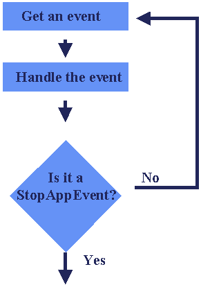

Events

Jeff Potter @jpotts18
Node.js is a platform built on Chrome's JavaScript runtime for easily building fast, scalable network applications. Node.js uses an event-driven, non-blocking I/O model that makes it lightweight and efficient, perfect for data-intensive real-time applications that run across distributed devices.
new Object();
EventQueue.add()
// use Node.js http module by using module systemvar http = require('http');http.createServer(function (request, response) {response.writeHead(200, {'Content-Type': 'text/plain'});response.end('Hello World\n');}).listen(8124);console.log('Server running at http://127.0.0.1:8124/');
npm install {{csv}} --save--save this module and its version are recorded in a package.json fileTip: Choose your modules wisely. Check features and github.
| + Good Uses | - Bad Uses | |
| + JSON API's | - CPU heavy apps | |
| + Single Page Apps | - Simple CRUD / HTML apps | |
| + Utilizing Unix Tools | - Ohh Shiny... | |
| + Streaming data | ||
| + Soft-Realtime Applications |
Borrowed from Node Guide
//create a module in circle.js
exports.area = function (r) {
return Math.PI * r * r;
};
//use circle module in app.js
var circle = require('./circle.js');
console.log('The area with radius 4 = ' + circle.area(4));
For more see File Modules